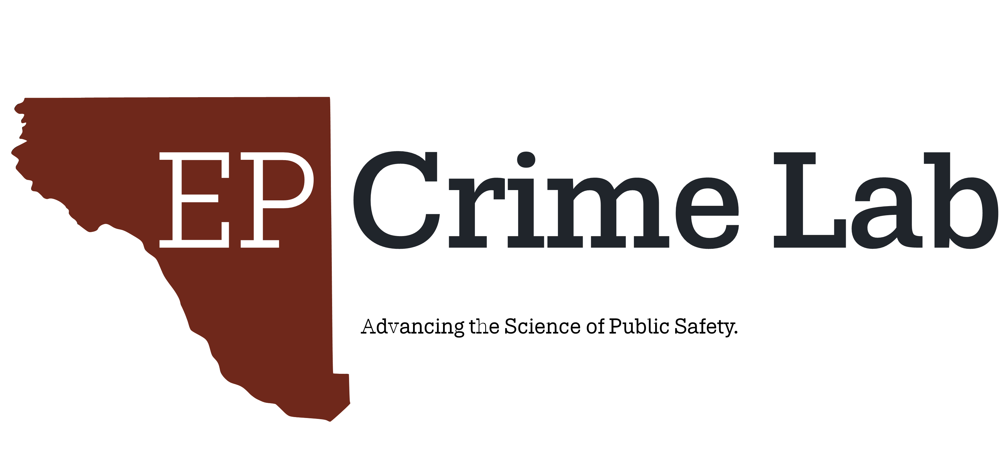

About the El Paso Crime Lab

The Project
The El Paso Crime Lab is an independent public research project focused on crime, policing, and public safety in El Paso and the Borderland.
The project was established by Matthew Durán to make research and local public safety information more accessible to the public. It brings together academic research, publicly available data, statistical analysis, and other sources of evidence to examine issues affecting the region.
The El Paso Crime Lab is intended as a public-facing resource for research and information. Its purpose is not simply to present statistics, but to provide context, examine evidence, and help readers better understand the complex issues underlying crime and public safety.
The goal is simple: make rigorous research and local evidence easier to find, understand, and use.
Matthew Durán
Matthew Durán is a criminologist specializing in crime prevention, policing, and public safety research. He is a fourth-year PhD student in the School of Criminology and Criminal Justice at Arizona State University, where he teaches undergraduate and graduate courses on policing and research methods.
His research focuses on applying rigorous quantitative and experimental methods to understand crime patterns and evaluate criminal justice policies and interventions. His work spans policing, victimization, and crime prevention, with an emphasis on translating empirical research into useful insights for policy and practice.
Before beginning his doctoral training, Matthew worked in several criminal justice roles in the El Paso region, including as a crime analyst with the El Paso Police Department, a detention officer with the El Paso County Sheriff’s Office, and a licensed private investigator and fugitive recovery agent.
Matthew established the El Paso Crime Lab as a platform for sharing research, analysis, and public safety information related to El Paso and the broader Borderland.
Research and Areas of Interest
His work spans across several areas:
- Crime prevention and public safety
- Policing and police-community relations
- Alcohol-impaired driving and traffic safety
- Crime and victimization
- Criminal justice policy and interventions
- Quantitative and experimental research methods
- Local crime and public safety data
Selected projects include analyses of alcohol-related crashes and impaired driving outcomes in El Paso, research examining adverse childhood experiences and offending, and the development of data products and research resources for understanding local public safety issues.
Open Access
The El Paso Crime Lab is guided by a commitment to open access and public understanding.
Much of the information used in public safety decision-making is technical, difficult to access, or disconnected from the communities it concerns. This project seeks to make research and local data more accessible by presenting evidence in a clear and transparent way.
Where possible, data sources, methods, limitations, and supporting research are identified so that readers can examine the evidence for themselves.
The project is independent and does not represent or speak on behalf of any law enforcement agency or government organization.
Research and Publications
For a complete list of Matthew’s publications, reports, and other research contributions, visit his personal website.
Contact
Matthew J. Durán
For questions about the research, data, publications, or the El Paso Crime Lab project:
Email: mduran29@asu.edu